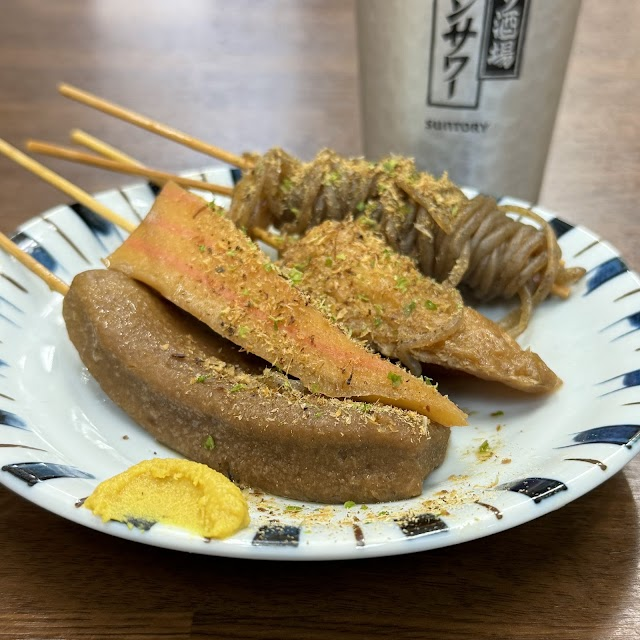
| 営業時間 | 月・火・木・金・土・日 10:00〜17:00 |
|---|---|
| 定休日 | 水曜 |
| 住所 | 静岡県静岡市葵区馬場町３８ |
| 予約 | 要確認 — ☎ 054-252-2548 ／ 公式サイト |
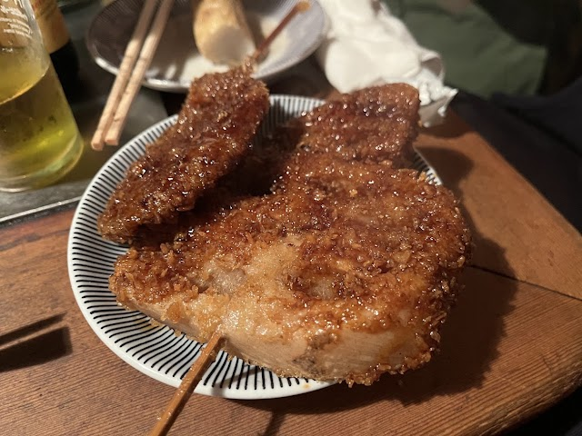
| 営業時間 | 火・水・木・金・土 17:00〜22:00 |
|---|---|
| 定休日 | 月・日曜 |
| 住所 | 静岡県静岡市葵区常磐町１丁目８−７ 青葉横丁 |
| 予約 | 可 — ☎ 054-253-3836 ／ 公式サイト |
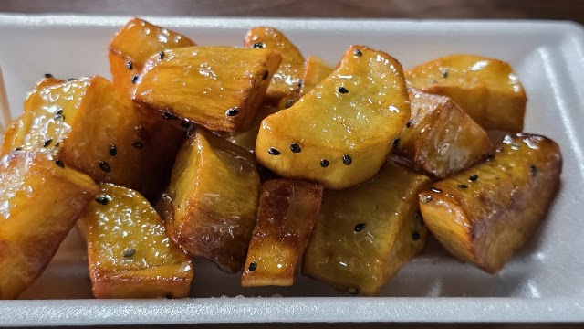
| 営業時間 | 水・木・金・土・日 10:30〜16:30 |
|---|---|
| 定休日 | 月・火曜 |
| 住所 | 静岡県静岡市葵区東草深町５−１２ |
| 予約 | 要確認 — ☎ 054-245-8862 ／ 公式サイト |
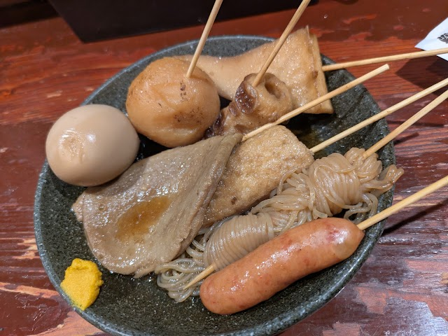
| 営業時間 | 月・火・水・木・金・土・日 15:00〜23:00 |
|---|---|
| 定休日 | なし(要最終確認) |
| 住所 | 静岡県静岡市駿河区南町６−１１ １F |
| 予約 | 可 — ☎ 054-284-8282 ／ 公式サイト |
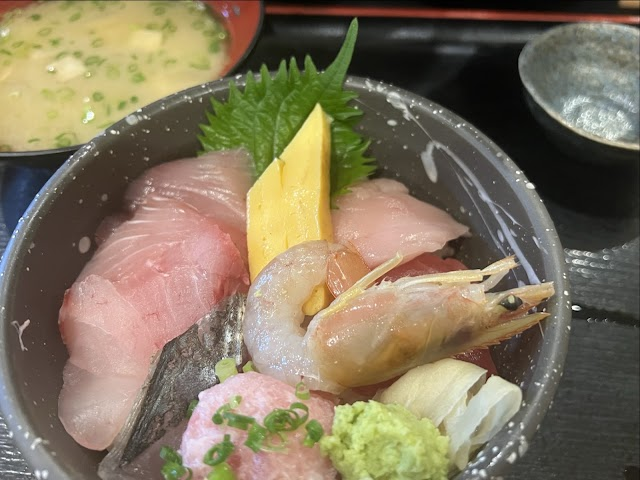
| 営業時間 | 月・火・木・金 11:00〜15:00, 17:30〜20:00 ／ 水 11:00〜15:00 ／ 土 11:00〜15:00, 17:00〜20:00 ／ 日 10:30〜15:00, 17:00〜20:00 |
|---|---|
| 定休日 | なし(要最終確認) |
| 住所 | 静岡県静岡市清水区島崎町１４９ まぐろ館 ２ 階 |
| 予約 | 可 — ☎ 054-368-7364 |
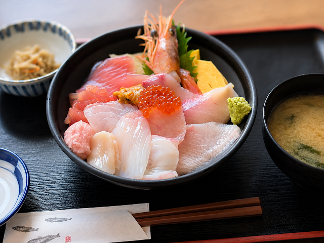
| 営業時間 | 月・火・木・金 10:30〜14:00 ／ 土・日 10:00〜15:00 |
|---|---|
| 定休日 | 水曜 |
| 住所 | 静岡県静岡市清水区島崎町１４９ 清水魚市場 河岸の市 まぐろ館 2階 |
| 予約 | 要確認 — ☎ 054-351-7113 ／ 公式サイト |
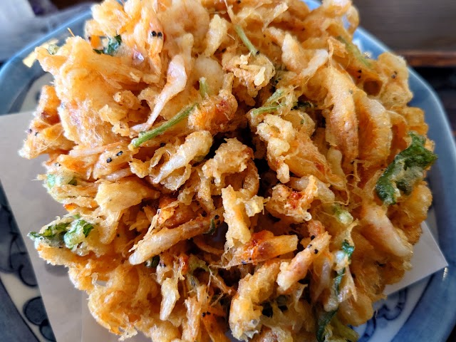
| 営業時間 | 月・火・水・木・金・土・日 11:30〜14:00, 17:00〜19:00 |
|---|---|
| 定休日 | なし(要最終確認) |
| 住所 | 静岡県静岡市清水区由比３１４ |
| 予約 | 可 — ☎ 054-375-2039 ／ 公式サイト |
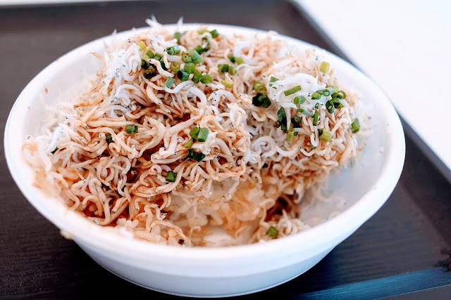
| 営業時間 | 月・火・水・金・土・日 11:00〜14:00 |
|---|---|
| 定休日 | 木曜 |
| 住所 | 静岡県静岡市駿河区用宗２丁目１８−１ |
| 予約 | 要確認 — ☎ 054-256-6077 |
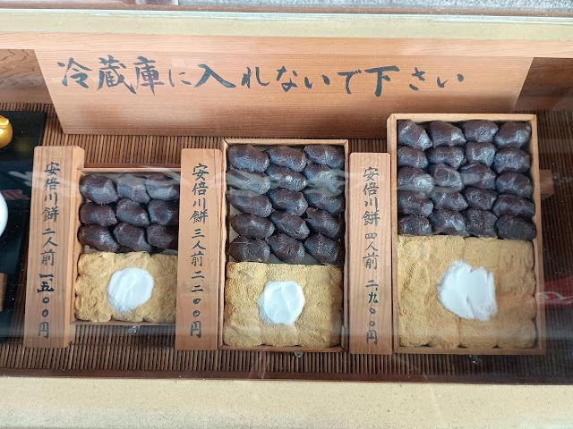
| 営業時間 | 月・火・水・金・土・日 9:00〜16:30 |
|---|---|
| 定休日 | 木曜 |
| 住所 | 静岡県静岡市葵区弥勒２丁目５−２４ |
| 予約 | 要確認 — ☎ 054-252-5698 |
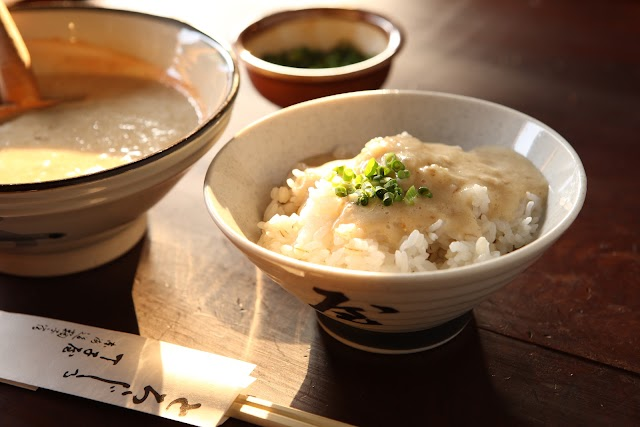
| 営業時間 | 月・火・水・金 11:00〜14:00 ／ 土・日 11:00〜15:00, 16:30〜19:00 |
|---|---|
| 定休日 | 木曜 |
| 住所 | 静岡県静岡市駿河区丸子７丁目１０−１０ |
| 予約 | 可 — ☎ 054-258-1066 ／ 公式サイト |
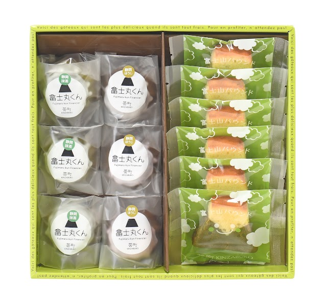
| 営業時間 | 月・火・木・金・土 9:30〜18:00 ／ 日 10:00〜17:00 |
|---|---|
| 定休日 | 水曜 |
| 住所 | 静岡県静岡市葵区土太夫町２７ |
| 予約 | 要確認 — ☎ 054-252-2098 ／ 公式サイト |
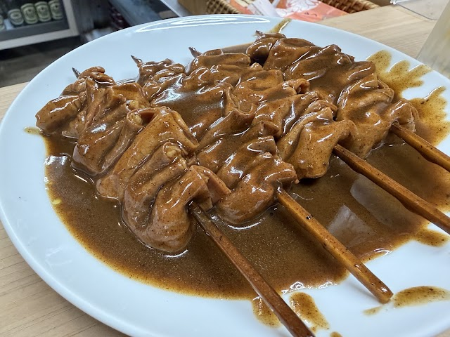
| 営業時間 | 月・火・木・金・土 17:00〜20:30 |
|---|---|
| 定休日 | 水・日曜 |
| 住所 | 静岡県静岡市清水区真砂町１−１４ |
| 予約 | 可 — ☎ 054-364-1203 ／ 公式サイト |
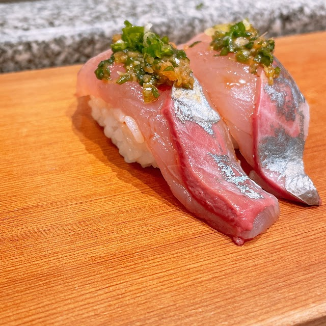
| 営業時間 | 月・火・木・金・土・日 11:30〜21:30 |
|---|---|
| 定休日 | 水曜 |
| 住所 | 静岡県静岡市清水区江尻東２丁目５−２８ |
| 予約 | 可 — ☎ 054-366-6083 ／ 公式サイト |
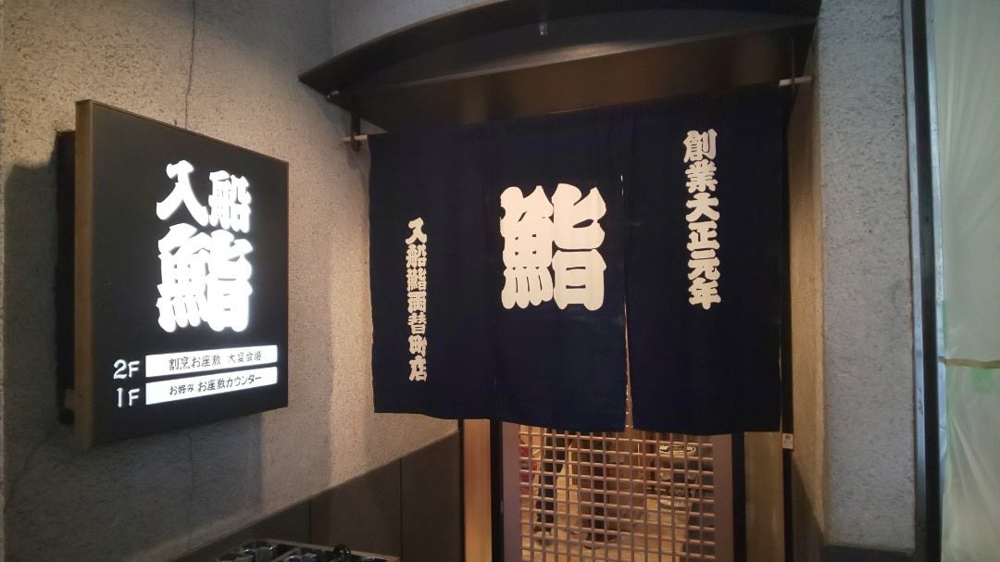
| 営業時間 | 月・火・水・木・金・土・日 11:00〜14:00, 17:00〜22:30 |
|---|---|
| 定休日 | なし(要最終確認) |
| 住所 | 静岡県静岡市葵区両替町２丁目７−１０ 両替町ビル |
| 予約 | 可 — ☎ 050-5486-1543 ／ 公式サイト |
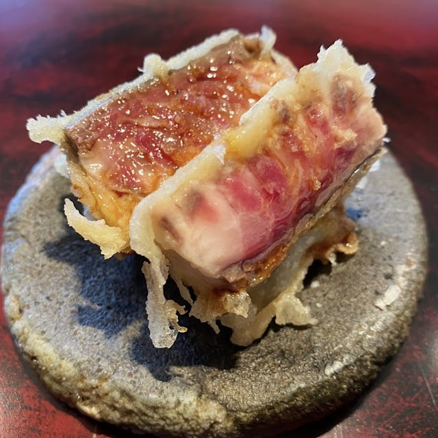
| 営業時間 | 月・火・水・木・金・日 12:00〜14:30, 18:00〜22:30 |
|---|---|
| 定休日 | 土曜 |
| 住所 | 静岡県静岡市葵区丸山町１２−２ |
| 予約 | 可 — ☎ 054-295-7791 |
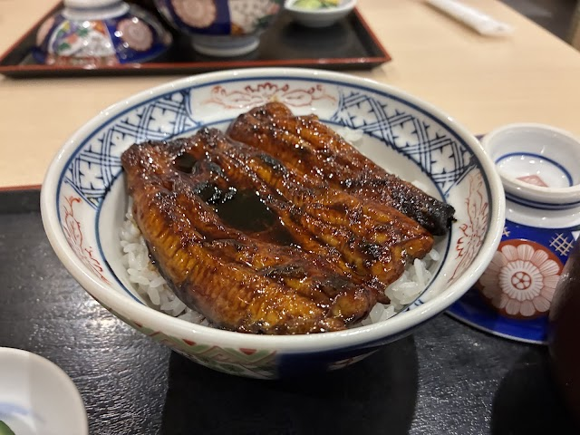
| 営業時間 | 月・水・木・金・土・日 11:00〜15:00, 16:30〜20:00 |
|---|---|
| 定休日 | 火曜 |
| 住所 | 静岡県静岡市葵区追手町１−２１ オーテシティービル 1F |
| 予約 | 可 — ☎ 054-254-5977 ／ 公式サイト |
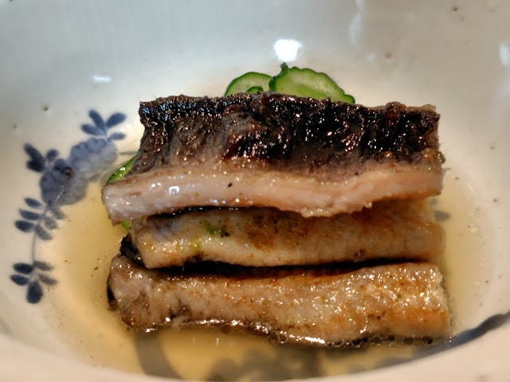
| 営業時間 | 月・火・水・木・金・土 12:00〜14:30, 18:00〜22:00 |
|---|---|
| 定休日 | 日曜 |
| 住所 | 静岡県静岡市葵区栄町３−６ |
| 予約 | 可 — ☎ 054-260-5166 ／ 公式サイト |
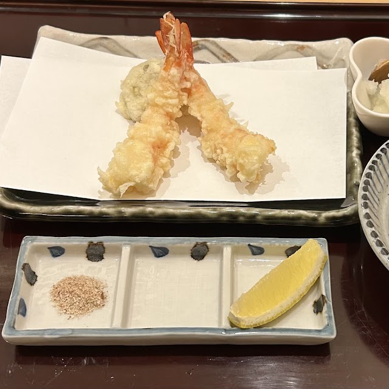
| 営業時間 | 月・火・木・金・土・日 11:00〜14:30, 17:00〜21:00 |
|---|---|
| 定休日 | 水曜 |
| 住所 | 静岡県静岡市葵区七間町１４−１ |
| 予約 | 可 — ☎ 050-5487-4411 ／ 公式サイト |
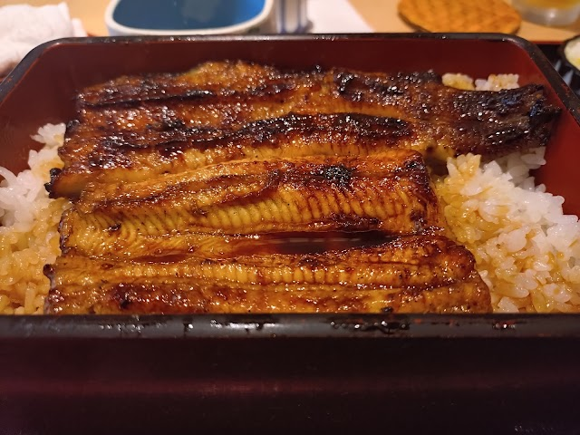
| 営業時間 | 月・火・水・金・土・日 11:00〜14:00, 16:30〜19:30 |
|---|---|
| 定休日 | 木曜 |
| 住所 | 静岡県静岡市葵区駿河町６−３ |
| 予約 | 可 — ☎ 054-255-0131 ／ 公式サイト |
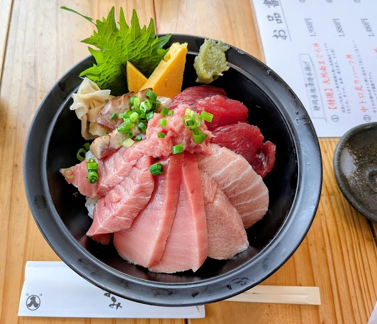
| 営業時間 | 月・火・水・木・金・土 11:00〜14:00, 17:30〜21:30 ／ 日 11:00〜14:00 |
|---|---|
| 定休日 | なし(要最終確認) |
| 住所 | 静岡県静岡市駿河区森下町１−４１ タイヨウビル ２階 |
| 予約 | 要確認 — ☎ 054-288-0232 ／ 公式サイト |
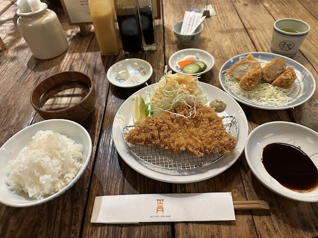
| 営業時間 | 月・木・金・土・日 11:30〜14:30, 17:00〜20:30 ／ 火 11:30〜14:30 |
|---|---|
| 定休日 | 水曜 |
| 住所 | 静岡県静岡市葵区相生町６−２２ |
| 予約 | 可 — ☎ 054-246-4884 ／ 公式サイト |
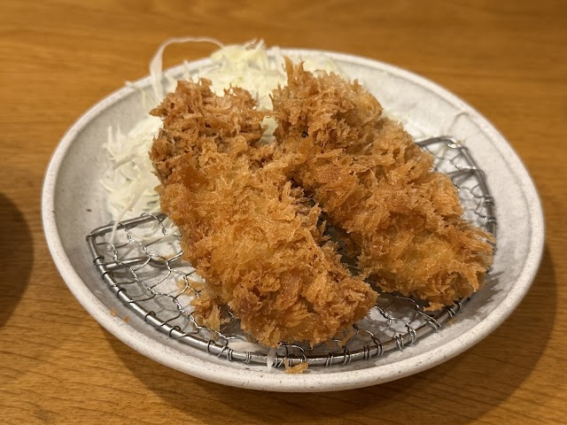
| 営業時間 | 月・火・水・木・金・土 11:00〜14:00, 17:00〜20:30 ／ 日 11:00〜14:00, 16:30〜20:30 |
|---|---|
| 定休日 | なし(要最終確認) |
| 住所 | 静岡県静岡市駿河区高松２丁目１−１０ |
| 予約 | 可 — ☎ 054-237-4518 ／ 公式サイト |
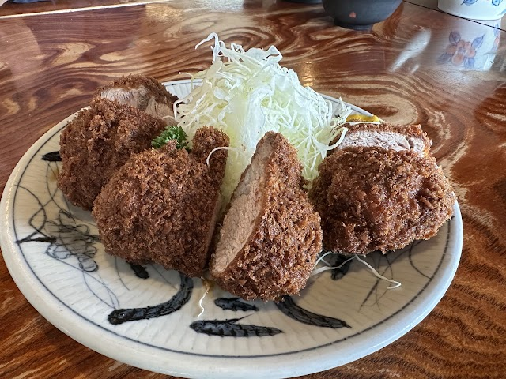
| 営業時間 | 火・水・木・金・日 11:00〜14:00, 17:00〜20:00 ／ 土 11:00〜13:30, 17:00〜20:00 |
|---|---|
| 定休日 | 月曜 |
| 住所 | 静岡県静岡市清水区三保９４３−７ |
| 予約 | 可 — ☎ 054-335-4966 |
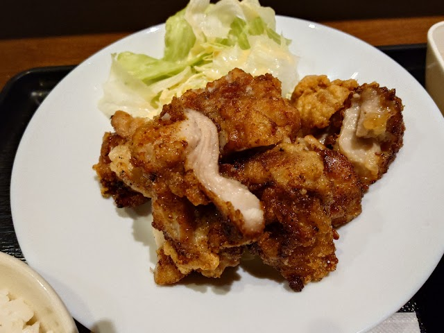
| 営業時間 | 月・火・木・金 11:00〜13:30, 18:00〜21:00 ／ 水・土 11:00〜13:30 |
|---|---|
| 定休日 | 日曜 |
| 住所 | 静岡県静岡市葵区西門町２−４ |
| 予約 | 要確認 — ☎ 054-253-5034 |
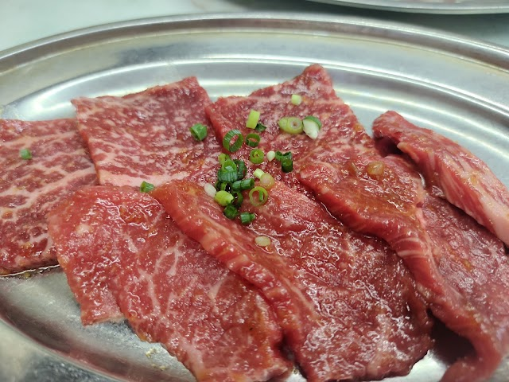
| 営業時間 | 月・火・水・木・金・土・日 11:00〜23:00 |
|---|---|
| 定休日 | なし(要最終確認) |
| 住所 | 静岡県静岡市駿河区登呂２丁目１８−１３ |
| 予約 | 可 — ☎ 054-282-6419 ／ 公式サイト |
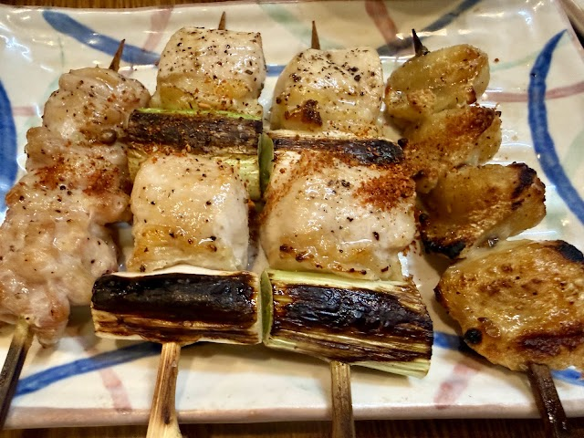
| 営業時間 | 火・水・木・金・土 17:00〜22:00 |
|---|---|
| 定休日 | 月・日曜 |
| 住所 | 静岡県静岡市葵区伝馬町９−１４ |
| 予約 | 可 — ☎ 054-253-1253 ／ 公式サイト |
| 営業時間 | 月・火・水・木 10:30〜14:30 ／ 金・土・日 10:30〜14:30, 18:00〜20:30 |
|---|---|
| 定休日 | なし(要最終確認) |
| 住所 | 静岡県静岡市葵区昭府２丁目１５−２２ ショウブベースハクガ 102 |
| 予約 | 要確認 — 公式サイト |
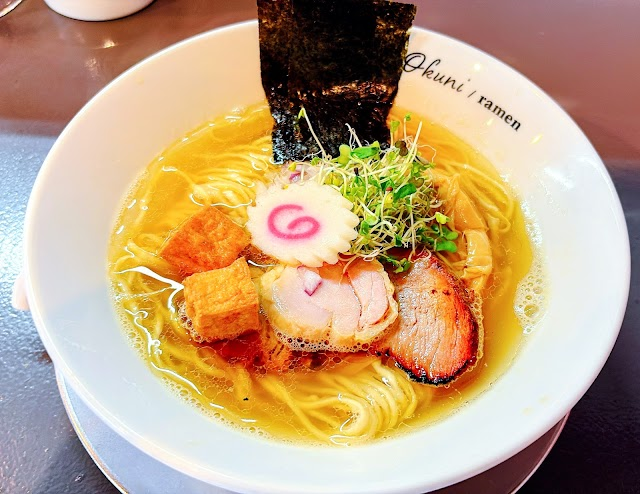
| 営業時間 | 月・火・水・土・日 7:00〜14:00 |
|---|---|
| 定休日 | 木・金曜 |
| 住所 | 静岡県静岡市葵区新富町６丁目１ |
| 予約 | 要確認 — ☎ 054-272-2315 ／ 公式サイト |
| 営業時間 | 火・水・木 11:00〜14:30 ／ 金 11:00〜14:30, 17:30〜20:00 ／ 土・日 10:30〜14:30, 17:30〜20:00 |
|---|---|
| 定休日 | 月曜 |
| 住所 | 静岡県静岡市葵区沓谷１３５４−１ |
| 予約 | 要確認 — ☎ 054-295-6881 |
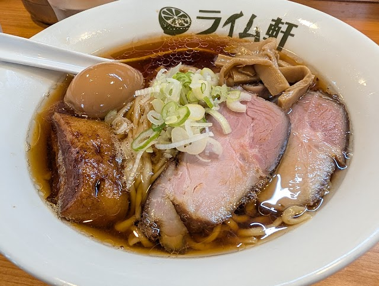
| 営業時間 | 月・水・木・金・土・日 11:30〜14:30, 18:00〜20:30 |
|---|---|
| 定休日 | 火曜 |
| 住所 | 静岡県静岡市駿河区中田本町６２−６ |
| 予約 | 要確認 — ☎ 054-287-3311 ／ 公式サイト |
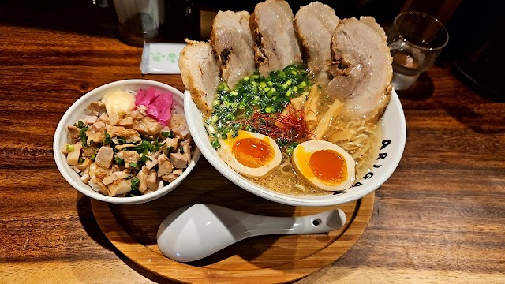
| 営業時間 | 火・水・木・金・土・日 11:00〜13:45, 17:00〜19:45 |
|---|---|
| 定休日 | 月曜 |
| 住所 | 静岡県静岡市清水区入江岡町１５−２６ |
| 予約 | 要確認 — ☎ 054-689-7200 ／ 公式サイト |
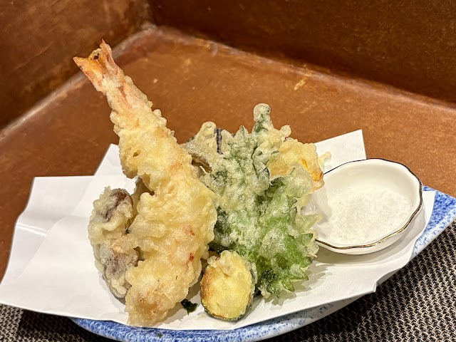
| 営業時間 | 火・水・木・金・土 11:30〜14:00, 17:30〜21:00 ／ 日 11:30〜14:00 |
|---|---|
| 定休日 | 月曜 |
| 住所 | 静岡県静岡市葵区常磐町２丁目６−７ |
| 予約 | 可 — ☎ 054-250-8555 ／ 公式サイト |
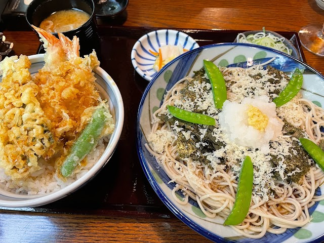
| 営業時間 | 月・火・水・木・金・土・日 11:00〜19:45 |
|---|---|
| 定休日 | なし(要最終確認) |
| 住所 | 静岡県静岡市葵区清閑町１２−１ |
| 予約 | 要確認 — ☎ 054-252-9470 ／ 公式サイト |
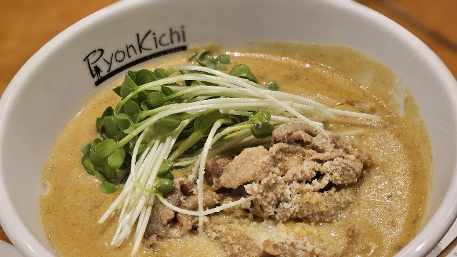
| 営業時間 | 月・火・水・木・金・土・日 11:30〜22:00 |
|---|---|
| 定休日 | なし(要最終確認) |
| 住所 | 静岡県静岡市葵区紺屋町４−２７ 1F |
| 予約 | 要確認 — ☎ 054-255-3566 |
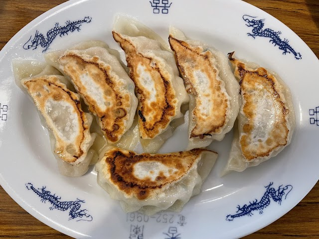
| 営業時間 | 月・火・水・木・金・土 11:00〜15:00, 17:00〜20:00 |
|---|---|
| 定休日 | 日曜 |
| 住所 | 静岡県静岡市葵区鷹匠２丁目１１−９ |
| 予約 | 要確認 — ☎ 054-252-0961 |
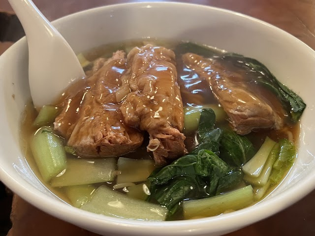
| 営業時間 | 月・火・木・金・土・日 11:00〜14:00, 17:00〜21:00 |
|---|---|
| 定休日 | 水曜 |
| 住所 | 静岡県静岡市葵区東千代田２丁目１−１０ |
| 予約 | 要確認 — ☎ 054-262-4740 |
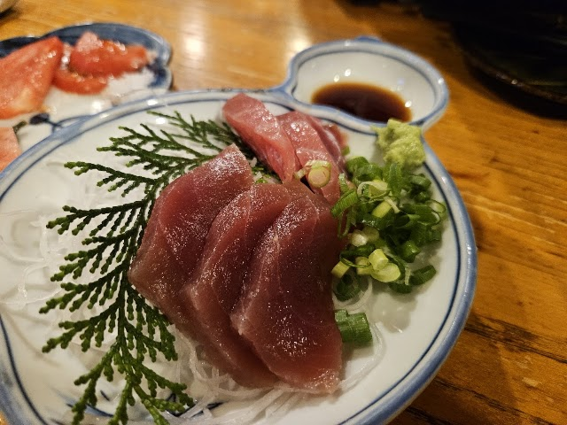
| 営業時間 | 月・火・水・木・金・土 16:30〜22:00 |
|---|---|
| 定休日 | 日曜 |
| 住所 | 静岡県静岡市葵区紺屋町５−４ |
| 予約 | 可 — ☎ 054-251-0131 |
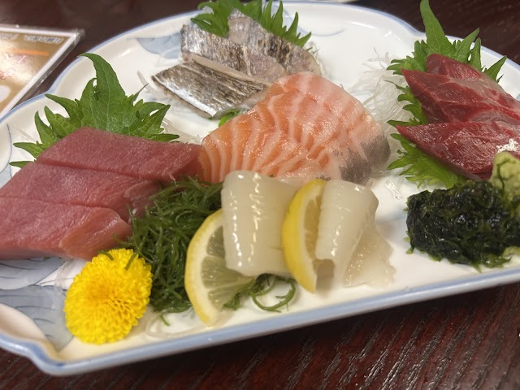
| 営業時間 | 月・火・水・金・土 16:30〜21:30 ／ 日 15:30〜21:00 |
|---|---|
| 定休日 | 木曜 |
| 住所 | 静岡県静岡市葵区人宿町１丁目５−８ |
| 予約 | 可 — ☎ 054-252-2311 ／ 公式サイト |
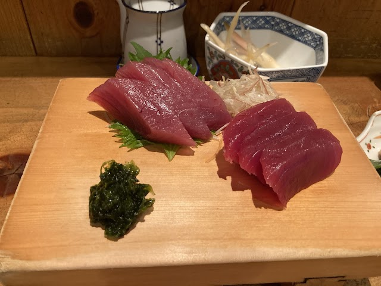
| 営業時間 | 月・火・水・木・金・土 17:00〜22:00 |
|---|---|
| 定休日 | 日曜 |
| 住所 | 静岡県静岡市葵区上石町７−１５ |
| 予約 | 可 — ☎ 054-252-3989 |
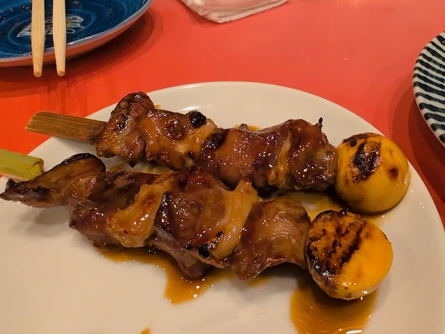
| 営業時間 | 月・火・水・木・金・土 17:00〜21:00 |
|---|---|
| 定休日 | 日曜 |
| 住所 | 静岡県静岡市葵区呉服町２丁目２−１７ |
| 予約 | 可 — ☎ 054-252-0678 ／ 公式サイト |
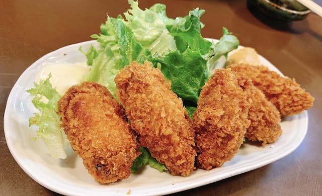
| 営業時間 | 月・土 17:00〜22:30 ／ 火・水・木・金 11:30〜13:30, 17:00〜22:30 |
|---|---|
| 定休日 | 日曜 |
| 住所 | 静岡県静岡市葵区呉服町２丁目２−７ |
| 予約 | 可 — ☎ 054-255-0280 |
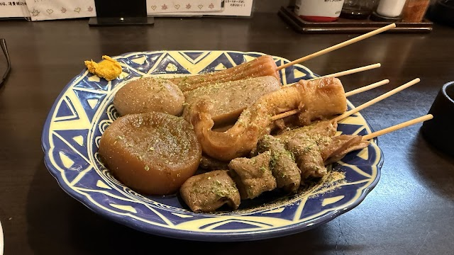
| 営業時間 | 月・火・水・木・金・土・日 17:00〜3:00 |
|---|---|
| 定休日 | なし(要最終確認) |
| 住所 | 静岡県静岡市葵区呉服町２丁目５−２１ リブロビル呉服町 ２階 |
| 予約 | 要確認 — ☎ 054-251-3267 ／ 公式サイト |
| 営業時間 | 月・火・水・木・金・土 15:00〜23:30 ／ 日 15:00〜22:30 |
|---|---|
| 定休日 | なし(要最終確認) |
| 住所 | 静岡県静岡市葵区常磐町１丁目７−２ |
| 予約 | 可 — ☎ 090-7701-8386 ／ 公式サイト |
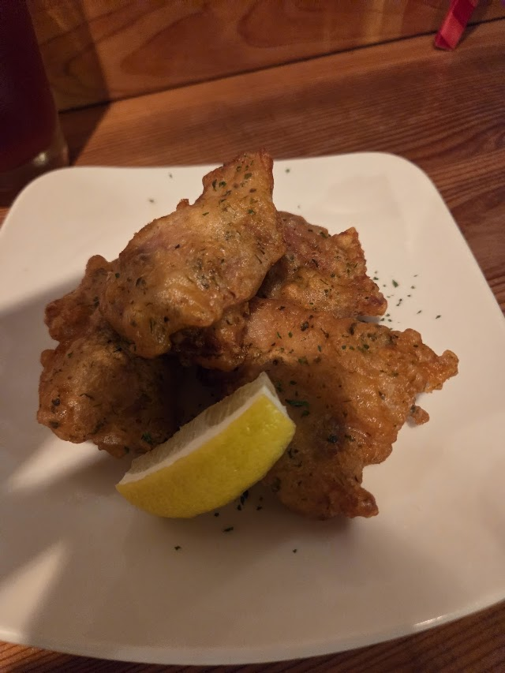
| 営業時間 | 月・水・木・金 14:00〜22:30 ／ 土 12:00〜22:00 ／ 日 12:00〜21:00 |
|---|---|
| 定休日 | 火曜 |
| 住所 | 静岡県静岡市葵区呉服町２丁目５−２２ ソシアル カドデ ２F |
| 予約 | 要確認 — ☎ 054-255-3683 |
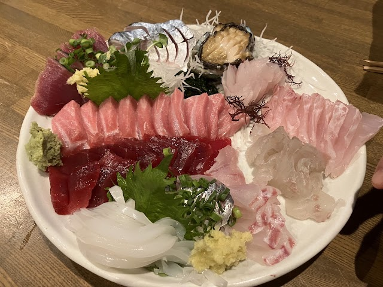
| 営業時間 | 月・火・水・木・金・土 17:00〜22:00 |
|---|---|
| 定休日 | 日曜 |
| 住所 | 静岡県静岡市清水区巴町９−２３ |
| 予約 | 可 — ☎ 054-352-3851 |
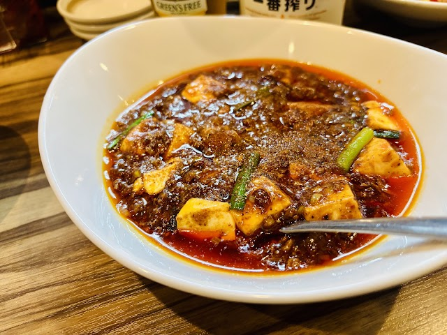
| 営業時間 | 月・日 17:00〜0:00 ／ 水 0:00〜2:00, 17:00〜2:00 ／ 木・金・土 17:00〜2:00 |
|---|---|
| 定休日 | 火曜 |
| 住所 | 静岡県静岡市葵区両替町２丁目5−８ 新加茂川ビル ２階 |
| 予約 | 可 — ☎ 054-273-8603 ／ 公式サイト |
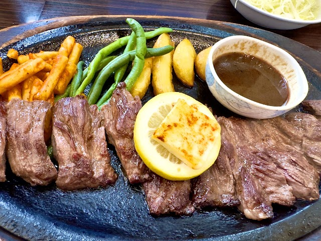
| 営業時間 | 月・火・水・金・土 11:00〜14:15, 17:00〜20:30 ／ 日 11:00〜14:15, 17:00〜20:00 |
|---|---|
| 定休日 | 木曜 |
| 住所 | 静岡県静岡市駿河区聖一色８６−４ |
| 予約 | 可 — ☎ 054-270-8636 ／ 公式サイト |
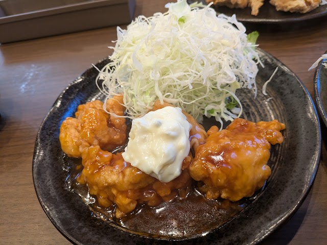
| 営業時間 | 月・火・木・金・土・日 11:00〜14:30, 17:00〜21:00 |
|---|---|
| 定休日 | 水曜 |
| 住所 | 静岡県静岡市葵区田町４丁目33ｰ2 |
| 予約 | 可 — ☎ 054-270-3627 ／ 公式サイト |
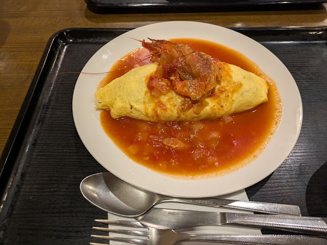
| 営業時間 | 月・火・木・金・土・日 11:30〜13:30, 18:00〜21:30 |
|---|---|
| 定休日 | 水曜 |
| 住所 | 静岡県静岡市駿河区馬渕２丁目７−２ |
| 予約 | 可 — ☎ 054-284-2003 ／ 公式サイト |
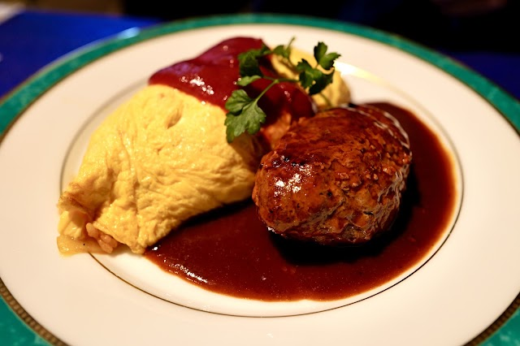
| 営業時間 | 12:00〜13:30／18:00〜21:00 |
|---|---|
| 定休日 | 月曜 |
| 住所 | 静岡県静岡市葵区人宿町１丁目５−７ |
| 予約 | 可 — ☎ 054-254-0595 |
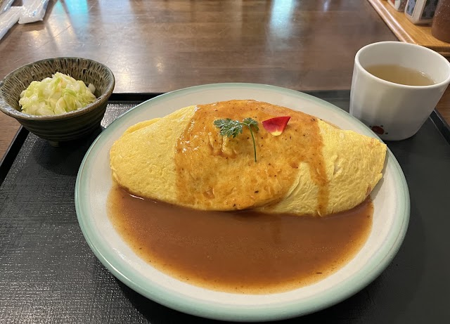
| 営業時間 | 月・木・金 11:00〜15:00, 18:00〜22:00 ／ 土・日 11:00〜15:00, 17:00〜22:00 |
|---|---|
| 定休日 | 火・水曜 |
| 住所 | 静岡県静岡市葵区沓谷３丁目１−６ |
| 予約 | 可 — ☎ 054-247-8851 ／ 公式サイト |
| 営業時間 | 火・水・木・金・土・日 11:30〜14:30, 17:30〜22:00 |
|---|---|
| 定休日 | 月曜 |
| 住所 | 静岡県静岡市葵区鷹匠１丁目３−５ メゾンフィール鷹匠 1階 エピキュリアン |
| 予約 | 可 — ☎ 054-204-6888 ／ 公式サイト |
| 営業時間 | 月・火・水・木・金・土 11:30〜14:30, 17:30〜22:30 |
|---|---|
| 定休日 | 日曜 |
| 住所 | 静岡県静岡市葵区鷹匠１丁目５−２ |
| 予約 | 可 — ☎ 050-5871-8048 ／ 公式サイト |
| 営業時間 | 火 18:00〜21:45 ／ 水・木・金・土 11:30〜14:30, 18:00〜21:45 |
|---|---|
| 定休日 | 月・日曜 |
| 住所 | 静岡県静岡市駿河区用宗４丁目８−２４ |
| 予約 | 可 — ☎ 054-659-2557 ／ 公式サイト |
| 営業時間 | 月・火・水 11:30〜15:00, 17:30〜21:00 ／ 金・土・日 11:30〜15:00, 17:30〜22:00 |
|---|---|
| 定休日 | 木曜 |
| 住所 | 静岡県静岡市清水区蜂ヶ谷２９１−４ |
| 予約 | 可 — ☎ 054-367-7271 ／ 公式サイト |
| 営業時間 | 月 18:00〜22:00 ／ 火・水・木・金・土 11:30〜14:30, 18:00〜22:00 |
|---|---|
| 定休日 | 日曜 |
| 住所 | 静岡県静岡市清水区平川地１０−２４ |
| 予約 | 可 — ☎ 054-330-1680 ／ 公式サイト |
| 営業時間 | 火・水・木・金・土・日 10:00〜19:00 |
|---|---|
| 定休日 | 月曜 |
| 住所 | 静岡県静岡市葵区鷹匠２丁目１０−７ |
| 予約 | 要確認 — ☎ 054-260-4775 ／ 公式サイト |
| 営業時間 | 月・火・水・木・金・土・日 11:30〜17:00 |
|---|---|
| 定休日 | なし(要最終確認) |
| 住所 | 静岡県静岡市葵区呉服町２丁目４−５ 三島屋ビル 2F |
| 予約 | 要確認 — ☎ 054-251-0252 |
| 営業時間 | 月・水・木・金・土・日 7:30〜18:00 |
|---|---|
| 定休日 | 火曜 |
| 住所 | 静岡県静岡市葵区七間町１６−８ |
| 予約 | 要確認 — ☎ 054-687-8458 ／ 公式サイト |
| 営業時間 | 月・火・水・金・日 11:00〜18:00 ／ 土 10:00〜19:00 |
|---|---|
| 定休日 | 木曜 |
| 住所 | 静岡県静岡市葵区羽鳥４丁目４−１ |
| 予約 | 要確認 — ☎ 054-278-9074 |
| 営業時間 | 火・水・木・金 9:00〜17:00 ／ 土 8:30〜17:00 |
|---|---|
| 定休日 | 月・日曜 |
| 住所 | 静岡県静岡市清水区真砂町１−１５ |
| 予約 | 要確認 — ☎ 054-364-8181 ／ 公式サイト |
| 営業時間 | 月・火・水・金・土・日 9:00〜19:00 |
|---|---|
| 定休日 | 木曜 |
| 住所 | 静岡県静岡市葵区駒形通２丁目７−２０ |
| 予約 | 要確認 — ☎ 054-275-2100 |
| 営業時間 | 月・火・水・木・金・土・日 8:00〜21:00 |
|---|---|
| 定休日 | なし(要最終確認) |
| 住所 | 静岡県静岡市葵区鷹匠２丁目１７−３ 望月ビル 1F |
| 予約 | 可 — ☎ 054-374-9360 ／ 公式サイト |
| 営業時間 | 火・水・木・金・土 9:30〜15:30 |
|---|---|
| 定休日 | 月・日曜 |
| 住所 | 静岡県静岡市清水区追分２丁目１３−２１ |
| 予約 | 要確認 — ☎ 054-366-3257 ／ 公式サイト |
| 営業時間 | 水・金・土・日 10:30〜18:00 |
|---|---|
| 定休日 | 月・火・木曜 |
| 住所 | 静岡県静岡市葵区鷹匠２丁目３−７ |
| 予約 | 要確認 — ☎ 054-252-0095 ／ 公式サイト |
| 営業時間 | 月・火・木・金・土・日 9:00〜19:00 |
|---|---|
| 定休日 | 水曜 |
| 住所 | 静岡県静岡市葵区馬場町２０ |
| 予約 | 要確認 — ☎ 054-252-6260 ／ 公式サイト |
| 営業時間 | 月・火・金・土・日 8:00〜15:00 |
|---|---|
| 定休日 | 水・木曜 |
| 住所 | 静岡県静岡市駿河区敷地１丁目６−７ ＥｓｓｅｎＢｒｏｔ |
| 予約 | 要確認 — ☎ 054-237-7365 |
| 営業時間 | 月・火・水・木・金・土・日 7:00〜15:00 |
|---|---|
| 定休日 | なし(要最終確認) |
| 住所 | 静岡県静岡市清水区草薙一里山２２−８ |
| 予約 | 要確認 — ☎ 050-8883-9335 ／ 公式サイト |
| 営業時間 | 水・木・金・土・日 10:00〜18:00 |
|---|---|
| 定休日 | 月・火曜 |
| 住所 | 静岡県静岡市清水区鶴舞町１−２３ ｃｈｅｚＨｉｒｏ |
| 予約 | 要確認 — ☎ 054-371-9101 ／ 公式サイト |
| 営業時間 | 月・火・木・金・土・日 8:30〜19:00 |
|---|---|
| 定休日 | 水曜 |
| 住所 | 静岡県静岡市葵区北安東３丁目１０−１０番４ |
| 予約 | 要確認 — ☎ 054-245-7831 ／ 公式サイト |
| 営業時間 | 火・水・木・金・土 8:30〜19:00 ／ 日 8:30〜17:00 |
|---|---|
| 定休日 | 月曜 |
| 住所 | 静岡県静岡市葵区大岩本町２１−１ |
| 予約 | 要確認 — ☎ 054-245-5986 ／ 公式サイト |
| 営業時間 | 月・木・金・土・日 8:00〜19:00 |
|---|---|
| 定休日 | 火・水曜 |
| 住所 | 静岡県静岡市葵区竜南１丁目１６−１９−２ |
| 予約 | 要確認 — ☎ 054-247-2490 ／ 公式サイト |
本ガイドは個人利用目的で作成。掲載情報は2026年8月時点の調査に基づく。写真出典: Google Maps投稿写真(©各投稿者/Google)。